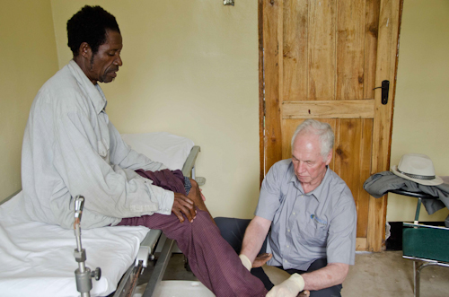
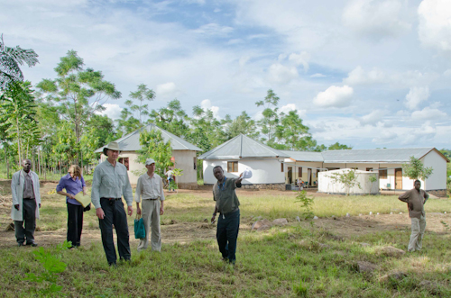

World Spine Care is currently working on the development of a project in the Magu region of Tanzania. The project is a collaboration between the Tanzania Home Economics Association (TAHEA), the Global Peace Network Canada (GPN), the Magu District health Council and World Spine Care. Dr. Brian Budgell has taken the lead in the development of the project which will be ready to open in the second half of 2014.
The Project aims to:
- monitor health and the determinants of health of residents of Magu District;
- identify health care needs that could be addressed through the cooperation of the Participants;
- establish, staff and operate a health care facility on land owned jointly by TAHEA and GPN Canada in Kanyama Village, Magu District;
- establish, staff and operate a health care facility within Magu District Hospital, Magu District
- establish, staff and operate occasional visiting health care services within rural Magu District;
- recruit international volunteer health care professionals to assist the staff of the District Council Of Magu in providing health care services offered through the Project; and
- integrate into the health service provided through the Project such indigenous and alternative health care practices as are lawful in Magu District, Tanzania.

The exepcted outcomes of this Project are:
- Improved health and healthcare of people with Spinal Disorders and Injuries in rural and underserved communities;
- Trained and skilled individuals on Spine care from the targeted rural and underserved communities; and
- Ongoing and sustainable Spine care in the targeted rural and underserved communities and the establishment of similar programs in other communities.